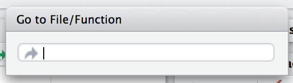

6 R code
制作包的首要原则是所有 R 代码都放在 R/ 目录中。 在本章中，您将学习如何将函数组织到文件中，保持一致的风格，并认识到包中函数的更严格要求（与脚本中的函数相比）。 我们还将提醒您测试驱动和正式检查开发中包的基本工作流程：load_all()、test() 和 check()。
6.1 Organise functions into files
唯一的硬性规定是您的包必须将其函数定义存储在 R 脚本中，即扩展名为 .R 的文件，它们位于 R/ 目录中1。 然而，更多的约定可以使您的包的源代码更易于浏览，并使您不必重新回答“我应该如何命名它？”，在每次创建新文件时。 Tidyverse Style Guide 提供了一些 general advice about file names，以及 advice that specifically applies to files in a package。 我们在这里展开。
文件名应该有意义并传达其中定义了哪些功能。 虽然您可以随意将函数安排到文件中，但有两个极端是不好的：不要将所有函数放入一个文件中，也不要将每个函数放入其自己的单独文件中。 该建议应告知您的一般政策，但每条规则都有例外。 如果一个特定的函数非常大或有很多文档，给它一个自己的文件，以函数命名是有意义的。 更常见的是，单个 .R 文件将包含多个函数定义：例如一个主函数及其辅助函数、一系列相关函数或两者的某种组合。
Table 6.1 展示了 tidyr package 1.1.2 版的实际来源中的一些示例。 与上面给出的硬性规定有一些偏差，这说明这里有很大的判断空间。
| Organising principle | Source file | Comments |
|---|---|---|
| One function | tidyr/R/uncount.R | Defines exactly one function, uncount(), that’s not particulary large, but doesn’t fit naturally into any other .R file |
| Main function plus helpers | tidyr/R/separate.R | Defines the user-facing separate() (an S3 generic), a data.frame method, and private helpers |
| Family of functions | tidyr/R/rectangle.R | Defines a family of functions for “rectangling” nested lists (hoist() and the unnest() functions), all documented together in a big help topic, plus private helpers |
您经常看到的另一个文件是 R/utils.R。 这是定义在多个包函数中使用的小型实用程序的常见位置。 由于它们充当多个函数的 helpers，将它们放在 R/utils.R 中可以让您在经过长时间后返回包时更容易重新发现它们。
Bob Rudis 汇集了此类文件，并在后文 Dissecting R Package “Utility Belts” 中进行了一些分析。
如果很难预测函数位于哪个文件中，则表明是时候将函数分成更多文件或重新考虑如何命名函数和/或文件了。
文件中函数的组织在 RStudio 中不太重要，它提供了两种跳转到函数定义的方法：
-
按 Ctrl +
.（句号）调出 Go to File/Function 工具，如 Figure 6.1 所示，然后开始输入名称。 继续键入以缩小列表并最终选择要访问的函数（或文件）。 这适用于项目中的函数和文件。
Figure 6.1: Go to File/Function in RStudio. 将光标放在函数名称上或选中函数名称后，按 F2。 这适用于在您的包或另一个包中定义的函数。
使用其中一种方法导航到函数后，通过单击编辑器左上角的后退箭头 ( ) 或按 Ctrl + F9（Windows 和 Linux）或 Cmd + F9（macOS）返回到开始的位置。
) 或按 Ctrl + F9（Windows 和 Linux）或 Cmd + F9（macOS）返回到开始的位置。
6.2 Fast feedback via load_all()
当您添加或修改在 R/ 下的文件中定义的函数时，您自然会想要尝试它们。 我们想重申我们强烈建议使用 devtools::load_all() 来使它们可用于交互式探索，而不是使用例如 R/ 下的 source()ing 文件。 load_all() 的主要内容在 Section 4.4 中，load_all() 也作为自然开发任务之一出现在 Section 1.8 中。 load_all() 在 testthat 工作流中的重要性在 Section 14.2.5 中进行了解释。 与备选方案相比，load_all() 可帮助您更快地进行迭代，并提供对已安装包的命名空间机制的出色近似。
6.3 Code style
我们建议遵循 tidyverse 风格指南 (https://style.tidyverse.org)，它比我们在这里介绍的更详细。 它的格式也使其成为比本书更具活力的文档。
尽管风格指南解释了“什么”和“为什么”，另一个重要的决定是如何实施特定的代码风格。 为此，我们推荐 styler 包 (https://styler.r-lib.org)；它的默认行为强制执行 tidyverse 风格指南。 有多种方法可以将 styler 应用于您的代码，具体取决于上下文：
-
styler::style_pkg()重新设置整个 R 包的样式。 -
styler::style_dir()重新设置目录中所有文件的样式。 -
usethis::use_tidy_style()是根据当前项目是否为 R 包应用上述功能之一的包装器。 -
styler::style_file()重新设置单个文件的样式。 -
styler::style_file()重新设置字符向量的样式。
安装 styler 后，RStudio Addins 菜单将提供几种额外的样式代码方式：
- the active selection
- the active file
- the active package
如果您不使用 Git 或其他版本控制系统，那么应用像 styler::style_pkg() 这样的函数会很伤脑筋，而且有些危险，因为您无法准确查看更改内容并接受/拒绝此类更改颗粒状的方式。
styler 包还可以与各种平台集成，用于托管源代码和进行持续集成。 例如，tidyverse 包使用 GitHub 操作，当拉取请求中的特殊评论 (/style) 触发时，该操作会重新设置包的样式。 这允许维护者专注于审查拉取请求的实质内容，而不必挑剔空白或缩进的小问题23。
6.4 Understand when code is executed
到目前为止，您可能一直在编写脚本，R 代码保存在您交互式执行的文件中，可能使用 IDE 和/或 source()，或者通过 Rscript 非交互式执行。 脚本和包中的代码之间有两个主要区别：
在脚本中，代码运行 … 当你运行它的时候！ 这种说法的尴尬反映了用剧本来思考这个问题是很困难的。 但是，我们必须了解包中的代码是在构建包时运行的。 这对你如何编写
R/下的代码有很大的影响：包代码应该只创建对象，其中绝大多数是函数。你的包中的函数将在你没有想象到的情况下使用。 这意味着您的函数在与外界交互的方式上需要深思熟虑。
我们在这里扩展第一点，在下一节中扩展第二点。 这些主题也在 Section 5.6 中具体说明。
当你 source() 一个脚本时，每一行代码都会被执行，结果会立即可用。 包代码的情况不同，因为它是分两步加载的。 当构建二进制包时（通常由 CRAN），R/ 中的所有代码都会被执行并保存结果。 当您使用 library() 附加一个包时，这些缓存的结果将被重新加载，并且某些对象（主要是函数）可供您使用。 Section 3.4 中给出了二进制形式的包的含义的完整详细信息。 我们将二进制包的创建称为（binary）“构建时间”，具体来说，我们指的是 R CMD INSTALL --build 运行时。 （您可能认为这就是 R CMD build 所做的，但实际上它生成了一个捆绑包，也就是”source tarball”。）对于 CRAN 包的 macOS 和 Windows 用户，构建时间是 CRAN 为其操作系统构建二进制包时。 对于那些从源代码安装包的人来说，构建时间本质上是他们（构建和）安装包的时间。
考虑赋值 x <- Sys.time()。 如果你把它放在脚本中，x 会告诉你脚本何时是 source()d。 但是，如果您将相同的代码放在包的顶层，x 会告诉您包二进制文件的构建时间。 在 Section 5.6 中，我们展示了在包内形成时间戳的上下文中的完整示例。
主要内容是：
函数之外的任何 R 代码都是可疑的，应该仔细检查。
我们在下面探索了一些真实世界的例子，这些例子展示了这个“构建时间与加载时间”问题是多么容易被烧毁。 幸运的是，一旦您诊断出此问题，通常不难解决。
6.4.1 Example: A path returned by system.file()
The shinybootstrap2 package once had this code below R/:
dataTableDependency <- list(
htmlDependency(
"datatables", "1.10.2",
c(file = system.file("www/datatables", package = "shinybootstrap2")),
script = "js/jquery.dataTables.min.js"
),
htmlDependency(
"datatables-bootstrap", "1.10.2",
c(file = system.file("www/datatables", package = "shinybootstrap2")),
stylesheet = c("css/dataTables.bootstrap.css", "css/dataTables.extra.css"),
script = "js/dataTables.bootstrap.js"
)
)So dataTableDependency was a list object defined in top-level package code and its value was constructed from paths obtained via system.file(). As described in a GitHub issue,
This works fine when the package is built and tested on the same machine. However, if the package is built on one machine and then used on another (as is the case with CRAN binary packages), then this will fail – the dependency will point to the wrong directory on the host.
The heart of the solution is to make sure that system.file() is called from a function, at run time. Indeed, this fix was made here (in commit 138db47) and in a few other packages that had similar code and a related check was added in htmlDependency() itself. This particular problem would now be caught by R CMD check, due to changes that came with staged installation as of R 3.6.0.
6.4.2 Example: Available colours
The crayon package has a function, crayon::show_ansi_colors(), that displays an ANSI colour table on your screen, basically to show what sort of styling is possible. In an early version, the function looked something like this:
show_ansi_colors <- function(colors = num_colors()) {
if (colors < 8) {
cat("Colors are not supported")
} else if (colors < 256) {
cat(ansi_colors_8, sep = "")
invisible(ansi_colors_8)
} else {
cat(ansi_colors_256, sep = "")
invisible(ansi_colors_256)
}
}
ansi_colors_8 <- # code to generate a vector covering basic terminal colors
ansi_colors_256 <- # code to generate a vector covering 256 colorswhere ansi_colors_8 and ansi_colors_256 were character vectors exploring a certain set of colours, presumably styled via ANSI escapes.
The problem was those objects were formed and cached when the binary package was built. Since that often happens on a headless server, this likely happens under conditions where terminal colours might not be enabled or even available. Users of the installed package could still call show_ansi_colors() and num_colors() would detect the number of colours supported by their system (256 on most modern computers). But then an un-coloured object would print to screen (the original GitHub issue is r-lib/crayon#37).
The solution was to compute the display objects with a function at run time (in commit e2b368a:
show_ansi_colors <- function(colors = num_colors()) {
if (colors < 8) {
cat("Colors are not supported")
} else if (colors < 256) {
cat(ansi_colors_8(), sep = "")
invisible(ansi_colors_8())
} else {
cat(ansi_colors_256(), sep = "")
invisible(ansi_colors_256())
}
}
ansi_colors_8 <- function() {
# code to generate a vector covering basic terminal colors
}
ansi_colors_256 <- function() {
# code to generate a vector covering 256 colors
}Literally, the same code is used, it is simply pushed down into the body of a function taking no arguments (similar to the shinybootstrap2 example). Each reference to, e.g., the ansi_colors_8 object is replaced by a call to the ansi_colors_8() function.
The main takeaway is that functions that assess or expose the capabilities of your package on a user’s system must fully execute on your user’s system. It’s fairly easy to accidentally rely on results that were cached at build time, quite possibly on a different machine.
6.4.3 Example: Aliasing a function
One last example shows that, even if you are careful to only define functions below R/, there are still some subtleties to consider. Imagine that you want the function foo() in your package to basically be an alias for the function blah() from some other package, e.g. pkgB. You might be tempted to do this:
foo <- pkgB::blahHowever, this will cause foo() in your package to reflect the definition of pkgB::blah() at the version present on the machine where the binary package is built (often CRAN), at that moment in time. If a bug is discovered in pkgB::blah() and subsequently fixed, your package will still use the older, buggy version, until your package is rebuilt (often by CRAN) and your users upgrade, which is completely out of your control. This alternative approach protects you from this:
foo <- function(...) pkgB::blah(...)Now, when your user calls foo(), they are effectively calling pkgB::blah(), at the version installed on their machine at that very moment.
A real example of this affected an older version of knitr, related to how the default “evaluate” hook was being set to evaluate::evaluate() (original issue is yihui/knitr#1441, resolved in commit d6b53e0).
6.5 Respect the R landscape
Another big difference between a script and a package is that other people are going to use your package, and they’re going to use it in situations that you never imagined. This means you need to pay attention to the R landscape, which includes not just the available functions and objects, but all the global settings.
You have changed the R landscape if you’ve loaded a package with library(), or changed a global option with options(), or modified the working directory with setwd(). If the behaviour of other functions differs before and after running your function, you’ve modified the landscape. Section 5.7 has a concrete example of this involving time zones and the locale-specific printing of datetimes. Changing the landscape is bad because it makes code much harder to understand.
There are some functions that modify global settings that you should never use because there are better alternatives:
Don’t use
library()orrequire(). These modify the search path, affecting what functions are available from the global environment. Instead, you should use theDESCRIPTIONto specify your package’s requirements, as described in Chapter 9. This also makes sure those packages are installed when your package is installed.Never use
source()to load code from a file.source()modifies the current environment, inserting the results of executing the code. There is no reason to usesource()inside your package, i.e. in a file belowR/. Sometimes peoplesource()files belowR/during package development, but as we’ve explained in Section 4.4 and Section 6.2,load_all()is a much better way to load your current code for exploration. If you’re usingsource()to create a dataset, it is better to use the methods in Chapter 7 for including data in a package.
Here is a non-exhaustive list of other functions that should be used with caution:
options()par()setwd()Sys.setenv()Sys.setlocale()-
set.seed()(or anything that changes the state of the random number generator)
If you must use them, make sure to clean up after yourself. Below we show how to do this using functions from the withr package and in base R.
The flip side of this coin is that you should avoid relying on the user’s landscape, which might be different to yours. For example, functions that rely on sorting strings are dangerous, because sort order depends on the system locale. Below we see that locales one might actually encounter in practice (C, English, French, etc.) differ in how they sort non-ASCII strings or uppercase versus lowercase letters.
x <- c("bernard", "bérénice", "béatrice", "boris")
withr::with_locale(c(LC_COLLATE = "fr_FR"), sort(x))
#> [1] "béatrice" "bérénice" "bernard" "boris"
withr::with_locale(c(LC_COLLATE = "C"), sort(x))
#> [1] "bernard" "boris" "béatrice" "bérénice"
x <- c("a", "A", "B", "b", "A", "b")
withr::with_locale(c(LC_COLLATE = "en_CA"), sort(x))
#> [1] "a" "A" "A" "b" "b" "B"
withr::with_locale(c(LC_COLLATE = "C"), sort(x))
#> [1] "A" "A" "B" "a" "b" "b"If you write your functions as if all users have the same system locale as you, your code might fail.
6.5.1 Manage state with withr
If you need to modify the R landscape inside a function, then it is important to ensure your change is reversed on exit of that function. This is exactly what base::on.exit() is designed to do. You use on.exit() inside a function to register code to run later, that restores the landscape to its original state. It is important to note that proper tools, such as on.exit(), work even if we exit the function abnormally, i.e. due to an error. This is why it’s worth using the official methods described here over any do-it-yourself solution.
We usually manage state using the withr package, which provides a flexible, on.exit()-like toolkit (on.exit() itself is covered in the next section). withr::defer() can be used as a drop-in replacement for on.exit(). Why do we like withr so much? First, it offers many pre-built convenience functions for state changes that come up often. We also appreciate withr’s default stack-like behaviour (LIFO = last in, first out), its usability in interactive sessions, and its envir argument (in more advanced usage).
The general pattern is to capture the original state, schedule its eventual restoration “on exit”, then make the state change. Some setters, such as options() or par(), return the old value when you provide a new value, leading to usage that looks like this:
Certain state changes, such as modifying session options, come up so often that withr offers pre-made helpers. Table 6.2 shows a few of the state change helpers in withr that you are most likely to find useful:
| Do / undo this | withr functions |
|---|---|
| Set an R option |
with_options(), local_options()
|
| Set an environment variable |
with_envvar(), local_envvar()
|
| Change working directory |
with_dir(), local_dir()
|
| Set a graphics parameter |
with_par(), local_par()
|
You’ll notice each helper comes in two forms that are useful in different situations:
-
with_*()functions are best for executing small snippets of code with a temporarily modified state. (These functions are inspired by howbase::with()works.)f <- function(x, sig_digits) { # imagine lots of code here withr::with_options( list(digits = sig_digits), print(x) ) # ... and a lot more code here } -
local_*()functions are best for modifying state “from now until the function exits”.g <- function(x, sig_digits) { withr::local_options(list(digits = sig_digits)) print(x) # imagine lots of code here }
Developing code interactively with withr is pleasant, because deferred actions can be scheduled even on the global environment. Those cleanup actions can then be executed with withr::deferred_run() or cleared without execution with withr::deferred_clear(). Without this feature, it can be tricky to experiment with code that needs cleanup “on exit”, because it behaves so differently when executed in the console versus at arm’s length inside a function.
More in-depth coverage is given in the withr vignette Changing and restoring state and withr will also prove useful when we talk about testing in Chapter 13.
6.5.2 Restore state with base::on.exit()
Here is how the general “save, schedule restoration, change” pattern looks when using base::on.exit().
Other state changes aren’t available with that sort of setter and you must implement it yourself.
g <- function(a, b, c) {
...
scratch_file <- tempfile()
on.exit(unlink(scratch_file), add = TRUE)
file.create(scratch_file)
...
}Note that we specify on.exit(..., add = TRUE), because you almost always want this behaviour, i.e. to add to the list of deferred cleanup tasks rather than to replace them entirely. This (and the default value of after) are related to our preference for withr::defer(), when we’re willing to take a dependency on withr. These issues are explored in a withr vignette.
6.5.3 Isolate side effects
Creating plots and printing output to the console are two other ways of affecting the global R environment. Often you can’t avoid these (because they’re important!) but it’s good practice to isolate them in functions that only produce output. This also makes it easier for other people to repurpose your work for new uses. For example, if you separate data preparation and plotting into two functions, others can use your data prep work (which is often the hardest part!) to create new visualisations.
6.5.4 When you do need side-effects
Occasionally, packages do need side-effects. This is most common if your package talks to an external system — you might need to do some initial setup when the package loads. To do that, you can use two special functions: .onLoad() and .onAttach(). These are called when the package is loaded and attached. You’ll learn about the distinction between the two in Section 10.4. For now, you should always use .onLoad() unless explicitly directed otherwise.
Some common uses of .onLoad() and .onAttach() are:
-
To set custom options for your package with
options(). To avoid conflicts with other packages, ensure that you prefix option names with the name of your package. Also be careful not to override options that the user has already set. Here’s a (highly redacted) version of dplyr’s.onLoad()function which sets an option that controls progress reporting:This allows functions in dplyr to use
getOption("dplyr.show_progress")to determine whether to show progress bars, relying on the fact that a sensible default value has already been set.
-
To display an informative message when the package is attached. This might make usage conditions clear or display package capabilities based on current system conditions. Startup messages are one place where you should use
.onAttach()instead of.onLoad(). To display startup messages, always usepackageStartupMessage(), and notmessage(). (This allowssuppressPackageStartupMessages()to selectively suppress package startup messages)..onAttach <- function(libname, pkgname) { packageStartupMessage("Welcome to my package") }
As you can see in the examples, .onLoad() and .onAttach() are called with two arguments: libname and pkgname. They’re rarely used (they’re a holdover from the days when you needed to use library.dynam() to load compiled code). They give the path where the package is installed (the “library”), and the name of the package.
If you use .onLoad(), consider using .onUnload() to clean up any side effects. By convention, .onLoad() and friends are usually saved in a file called R/zzz.R. (Note that .First.lib() and .Last.lib() are old versions of .onLoad() and .onUnload() and should no longer be used.)
One especially hairy thing to do in a function like .onLoad() or .onAttach() is to change the state of the random number generator. Once upon a time, ggplot2 used sample() when deciding whether to show a startup message, but only in interactive sessions. This, in turn, created a reproducibility puzzle for users who were using set.seed() for their own purposes, prior to attaching ggplot2 with library(ggplot2), and running the code both interactively and noninteractively. The chosen solution was to wrap the offending startup code inside withr::with_preserve_seed(), which leaves the user’s random seed as it found it.
6.6 Constant health checks
Here is a typical sequence of calls when using devtools for package development:
- Edit one or more files below
R/. -
document()(if you’ve made any changes that impact help files or NAMESPACE) load_all()- Run some examples interactively.
-
test()(ortest_active_file()) check()
An interesting question is how frequently and rapidly you move through this development cycle. We often find ourselves running through the above sequence several times in an hour or in a day while adding or modifying a single function.
Those newer to package development might be most comfortable slinging R code and much less comfortable writing and compiling documentation, simulating package build & installation, testing, and running R CMD check. And it is human nature to embrace the familiar and postpone the unfamiliar. This often leads to a dysfunctional workflow where the full sequence above unfolds infrequently, maybe once per month or every couple of months, very slowly and often with great pain:
- Edit one or more files below
R/. - Build, install, and use the package. Iterate occasionally with previous step.
- Write documentation (once the code is “done”).
- Write tests (once the code is “done”).
- Run
R CMD checkright before submitting to CRAN or releasing in some other way.
We’ve already talked about the value of fast feedback, in the context of load_all(). But this also applies to running document(), test(), and check(). There are defects you just can’t detect from using load_all() and running a few interactive examples that are immediately revealed by more formal checks. Finding and fixing 5 bugs, one at a time, right after you created each one is much easier than troubleshooting all 5 at once (possibly interacting with each other), weeks or months after you last touched the code.
If you’re planning on submitting your package to CRAN, you must use only ASCII characters in your .R files. In practice, this means you are limited to the digits 0 to 9, lowercase letters ‘a’ to ‘z’, uppercase letters ‘A’ to ‘Z’, and common punctuation.
But sometimes you need to inline a small bit of character data that includes, e.g., a Greek letter (µ), an accented character (ü), or a symbol (30°). You can use any Unicode character as long as you specify it in the special Unicode escape "\u1234" format. The easiest way to find the correct code point is to use stringi::stri_escape_unicode():
x <- "This is a bullet •"
y <- "This is a bullet \u2022"
identical(x, y)
#> [1] TRUE
cat(stringi::stri_escape_unicode(x))
#> This is a bullet \u2022Sometimes you have the opposite problem. You don’t intentionally have any non-ASCII characters in your R code, but automated checks reveal that you do.
W checking R files for non-ASCII characters ...
Found the following file with non-ASCII characters:
foo.R
Portable packages must use only ASCII characters in their R code,
except perhaps in comments.
Use \uxxxx escapes for other characters.The most common offenders are “curly” or “smart” single and double quotes that sneak in through copy/paste. The functions tools::showNonASCII() and tools::showNonASCIIfile(file) help you find the offending file(s) and line(s).
tools::showNonASCIIfile("R/foo.R")
#> 666: #' If you<e2><80><99>ve copy/pasted quotes, watch out!不幸的是你不能在
R/中使用子目录。 下一个最好的办法是使用公共前缀，例如abc-*.R，来表示一组文件是相关的。↩︎请参阅 GitHub Actions for the R language repository 中的 Commands workflow。↩︎
Robot Pedantry, Human Empathy 博客文章出色地总结了代码重新设计等自动化任务的好处。↩︎